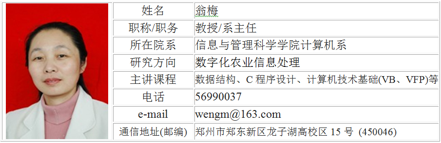

课程负责人简介
翁梅，女，教授，硕士研究生导师。现任计算机系主任，兼任全国高等学校计算机基础教育研究会理事，河南省高等学校计算机教育研究会常务理事、副秘书长，河南省计算机学会常务理事，河南省教育厅学术技术带头人，郑州市巾帼科技带头人，金水区政协委员。河南农业大学计算机学科带头人。从事计算机方面的教学与研究工作。在全省教育系统教学技能竞赛中获一等奖，多次获校教学优秀奖、校课堂教学优秀奖，教书育人奖、先进教育工作者，并获河南农业大学优秀奖励金壹等奖，2010年被评为河南农业大学学生心目中的“十大名师”。
讲授数据结构、C程序设计、数据库原理与应用、计算机技术基础(VB、VFP)等10多门课程。发表论文40余篇。任主编、副主编、编委出版著作10部, 主审教材3部。参加全国统编教材编写6部，并任主编、副主编。获省部级科技成果奖3项，厅委级科技成果奖7项，校级教学成果3项。
主要论文：
- 1.农林院校的计算机基础教学改革 , 洛阳工学院学报, 2001.12
- 2.微机编程在灰优势模型上的应用 , 河南科学, 2003.6
- 3.“离散数学”课程教学实践与探索 , 计算机教育, 2004.12
- 4.基于Web的数据挖掘分类技术, 中国科技信息, 2005.10
- 5.技术类高校计算机教学的改革与创新, 计算机科学33卷, 2006.11
- 6.基于Web Services技术的跨地域应用系统的开发 , 河南农业大学学报, 2007.2
- 7.理论与实践关系在计算机课程教学中的应用 , 计算机教育, 2007.6
- 8.农业院校计算机基础教学现状及改革探讨 , 科技信息, 2008.12
- 9.The application in computer teaching about the relationship between theory and practice(EI收录), Proceedings of 2009 4th International Conference on Computer Science & Education, 2009.7
- 10.XML在生物信息学中的应用 , 安徽农业科学, 2009.10
- 11.《电子商务概论》课程教学方法初探 , 光盘技术, 2009.11
- 12.Rough Set based Decision Tree Ensemble Algorithm for Text Classification (EI收录), Journal of Computational Information Systems, 2010.6
- 13.Boosting Decision Trees for Prediction in E-Commerce (ISTP收录), Proceedings of 2010 International Conference on Information Technology and Industrial Engineering, 2010.6
- 14.基于GIS技术的河南省重点保护植物管理信息系统设计与分析 , 河南农业大学学报, 2011.2
- 15.An Efficient Key Distribution Scheme for Sensor Networks, ETCS2011, 2011.3
- 16.A novel ensemble algorithm for biomedical classification based on Ant Colony Optimization(EI收录), Applied Soft Computing, 2011.3
- 17.A Validity Analysis of Estimate Improvement Model of Software Cost, Journal Advanced Materials Research, 2011.4
-
18.Several problems and its analysis in discrete mathematics, ICIET2011, 2011.6
- 19.The Design and Implementation of the CNGI Customer Premises Network for HENAN Agricultural Informatization Center, ICCNE 2011, 2011.6
- 20.Study on Relationship between Tobacco Canopy Spectra and LAI（EI收录）, Computer and Computing Technologies in Agriculture IV , 2011.7
- 21.计算机操作系统课程教学的现状和改革, 计算机光盘软件与应用, 2011.10
- 22.河南省重点保护植物优先保护等级划分研究, 河南农业科学, 2012.1
成果与奖励：
- 1. 河南小秦岭自然保护区生物多样性本底研究，河南省科学技术成果贰等奖，第5
- 2. 中国洛阳国家牡丹基因库建立及基因资源鉴定研究，省星火科技贰等奖，第9
- 3. 嵩山国家森林公园植物资源与退化生态系统恢复重建的研究，省科技进步叁等奖, 第6
- 4. 基于网络的计算机考试系统，河南省信息技术教育优秀成果壹等奖，第5
- 5．牡丹品种计算机信息管理系统研究，省农牧厅科技进步壹等奖，第6
- 6．嵩山国家森林公园植物资源与退化生态系统恢复重建的研究省林业厅科技进步壹等奖，第6
- 7．高等农林院校面向21世纪计算机系列课程设置的研究，河南农业大学教学成果贰等奖，第1
- 8．21世纪高等农林院校计算机教育模式改革好实践，河南农业大学教学教学成果一等奖，第1
- 9．《数据结构》多媒体课件，河南省教育技术成果三等奖，第2
- 10．农林类高等院校计算机基础教学改革与实践，河南省信息技术教育优秀成果三等奖，第3
- 11．离散数学教学中几个常见问题及其解析，河南省信息技术教育优秀成果三等奖，第3
- 12．浅谈如何提高高等院校计算机课程课堂教学质量，河南省信息技术教育优秀成果二等奖，第4
通过省级鉴定项目：
- 1．河南重点保护植物资源信息管理系统及评价体系，主持
- 2．河南树木资源信息管理系统及评价体系的研究，主持
- 3．小麦蚜虫和白粉病高光谱遥感识别与监测，第2
- 4．提高计算机基础课程教学质量的综合改革研究与实践，第2
主持的在研课题：
- 1．河南重点保护植物资源信息管理系统及评价体系，河南省2006年科技发展项目
- 2．河南树木资源信息管理系统及评价体系的研究，河南省教育厅2006年度自然科学科研项目
- 3．地方院校大学计算机基础课程实施方案的研究与分析，教育部2011年高等学校计算机基础教学改革试点项目
- 4．河南省维管植物资源信息系统的构建，河南省教育厅自然科学研究计划项目
- 5．农业院校计算机课程内容与体系改革的研究与实践，河南省教育科学“十一五”规划2010课题
- 6．西峡老界岭自然保护区猕猴桃信息管理系统研究西峡老界岭自然保护区猕猴桃信息管理系统研究，全球环境基金
主要讲授的课程：
-
数据结构、C程序设计、计算机技术基础（VB、VFP）、计算机基础
主要出版的教材：
- 1.Visual Foxpro 语言程序设计，中国农业出版社，全国高等农林院校十五规划教材，2004.1，副主编
- 2.大学计算机基础，中国农业出版社，全国高等农林院校十五规划教材，2004.8，副主编
- 3.大学计算机基础，湖南教育出版社，高等教育21世纪课程教材、计算机基础教育课程体系改革教材，2005.6，副主编
- 4.大学计算机基础上机指导与测试，湖南教育出版社，高等教育22世纪课程教材、计算机基础教育课程体系改革教材，2005.6，副主编
- 5.大学计算机基础，中国农业出版社，全国高等农林院校十一五规划教材，2007.1，主编
- 6.大学计算机基础上机指导与测试，中国农业出版社，全国高等农林院校十一五规划教材，2007.1，主编
- 7.Access数据库程序设计（第二版），电子工业出版社，2009.8，副主编
- 8.Visual FoxPro程序设计，中国农业出版社，2012.1，主编
- 9.大学计算机基础（第二版），中国农业出版社，2012.8，主编
主要教学方面的荣誉称号与奖励：
- 1.2010年河南农业大学学生心目中的十大名师
- 2.2011年河南省巾帼建功标兵
- 3.2004年河南省教育厅学术技术带头人
- 4.2005年河南省教学技能竞赛一等奖
- 5.2003年郑州市巾帼科技带头人
- 6.2005、2009年河南农业大学巾帼标兵
- 7.2007-2009年度河南农业大学教学优秀奖
- 8.1996-1997学年河南农业大学课堂教学优秀奖
- 9.2005届、2006届本科毕业生优秀论文（设计）最佳指导教师奖
- 10.全国软件专业人才设计与开发大赛优秀指导教师